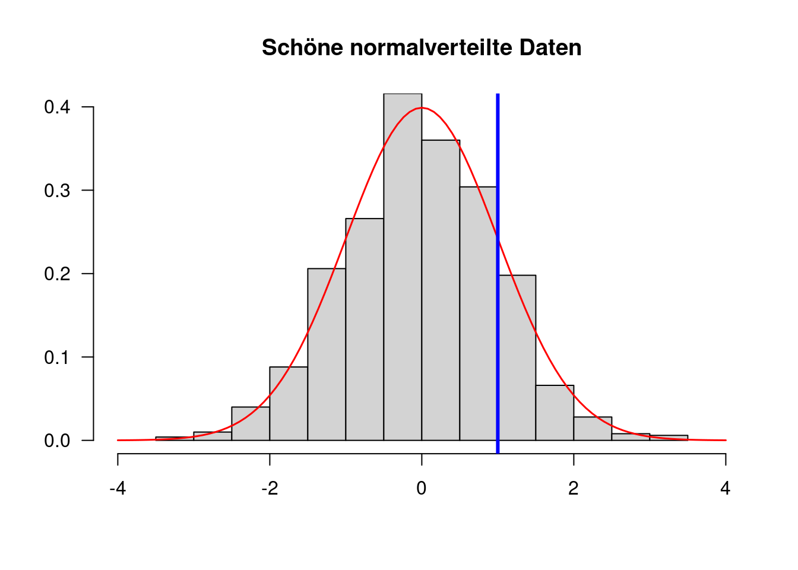

2 Vektoren
Die einfachste und wichtigste Datenstruktur von R ist der
Vektor. Ein Vektor ist beispielsweise eine einzelne Zahl wie in den
Taschenrechner-Berechnungen in Kapitel 1. So gilt für die Berechnung
1 + 3:
1ist ein Vektor3ein Vektor- das Ergebnis
4ist auch ein Vektor
Das Interessante an Vektoren ist, dass der ein-elementige Vektor nur ein
Spezialfall ist. Im Normalfall können Vektoren mehrere Elemente
enthalten; die „atomare“ Einheit in R ist also nicht ein einzelnes
Element, sondern gleich eine Aneinanderreihung beliebig vieler4
gleichartiger Elemente, etwa Zahlen. Statistische Berechnungen – wie
die Berechnung eines Mittelwerts oder einer Standardabweichung – lassen
sich direkt auf einer Menge an Daten durchführen, da diese in einem
Vektor gespeichert sind. Diese „Vektorbasiertheit“ ist vermutlich die
größte Stärke von R für statistische Berechnungen.
Elemente zu Vektoren zusammenfügen (sprich: mehrere Vektoren zu
einem Vektor zusammenfügen) funktioniert mit der Funktion c() –
die vermutlich basalste Funktion in R. Sie ist so simpel und
grundlegend, dass man sie gegebenenfalls vergisst, wenn man sie braucht
– versucht, sie zu erinnern!
## Füge mehrere Zahlen zu einem Vektor zusammen:
c(0.5, 1, 1.5) # Kommazahlen mit DezimalPUNKT schreiben[1] 0.5 1.0 1.5Man kann die Funktion c() auch auf eine einzelne Zahl anwenden. Das
ist dasselbe als würde man nur die Zahl eingeben:
c(1)[1] 1Folgendes geht auch, da c() mehrere Vektoren zu einem einzelnen
Vektor „verschmilzt“:
c(0.5, 1, 1.5, c(1, 2, 3))[1] 0.5 1.0 1.5 1.0 2.0 3.0Auf mehrelementigen Vektoren kann man statistische Berechnungen durchführen, wie etwa die Bestimmung des arithmetischen Mittels, einer Standardabweichung, der Varianz, oder des Minimums oder Maximums:5
## Berechne einen Mittelwert
mean(c(0.5, 1, 1.5))[1] 1## Berechne eine Standardabweichung
sd(c(0.5, 1, 1.5))[1] 0.5## Berechne eine Varianz:
var(c(0.5, 1, 1.5))[1] 0.25## Und jetzt noch einmal die Standardabweichung:
sqrt(var(c(0.5, 1, 1.5))) # was ist `sqrt`?[1] 0.5## Minimum:
min(c(0.5, 1, 1.5))[1] 0.5## Maximum:
max(c(0.5, 1, 1.5))[1] 1.5In diesem Code-Block haben wir implizit einen wichtigen Bestandteil von
R kennengelernt: Funktionen. Für den Einstieg reicht es für uns,
folgende Eigenschaften von Funktionen zu verstehen:
- Funktionen haben einen Namen – etwa:
meanoderc - Hinter dem Namen einer Funktion werden in Klammern ein oder mehrere Argumente übergeben, etwa: ein Vektor
- Wenn einer Funktion mehrere Argumente übergeben werden, werden diese
mit Kommata separiert, etwa:
c(1, 2, 3) - Funktionen führen mit den übergebenen Daten eine Berechnung durch und geben uns das Ergebnis zurück
Einfach gesagt nehmen also Funktionen Daten entgegen und geben wiederum
Daten zurück. Der Großteil unserer Arbeit mit R ist die Anwendung von
Funktionen. Es ist möglich, Funktionsaufrufe zu verschachteln, wie dieses
Beispiel zeigte:
sqrt(var(c(0.5, 1, 1.5)))Hier wertet die Funktion sqrt() (die Wurzel; engl. square root) das
Ergebnis der Funktion var() aus, um eine Standardabweichnung zu
bestimmen. Der Aufruf ist also äquivalent zu sqrt(0.25), da die
Varianz von 0.5, 1, und 1.5 gleich 0.25 ist. Diese Beobachtung offenbart
eine weitere wichtige Eigenschaft von R: Wir können unseren Code immer
als das verstehen, was er ergibt, wenn er von R ausgewertet wird. Es
macht keinen Unterschied, ob ich das Ergebnis einer Berechnung selber
„händisch“ aufschreibe – also hier 0.25 –, oder Code schreibe, der mir
dieses Ergebnis generiert – hier: var(c(0.5, 1, 1.5)).
Eine nützliche und oft verwendete Kurzform, um Vektoren aufsteigender, ganzer Zahlen zu erstellen ist folgende:
1:20 [1] 1 2 3 4 5 6 7 8 9 10 11 12 13 14 15 16 17 18 19 20So lässt sich beispielsweise sehr einfach die Summe aller Zahlen von 1 bis 1,000 berechnen:
sum(1:1000)[1] 500500Wir können auch absteigende Sequenzen erstellen:
5:-5 [1] 5 4 3 2 1 0 -1 -2 -3 -4 -5Diese Tabelle enthält einige nützliche Funktionen, die auf Vektoren
anwendbar sind (in R-Jargon: sie nehmen einen Vektor als Argument
an) und jeweils selber auch einen Vektor zurückgeben:
| Name | Funktionalität |
|---|---|
mean |
Berechnet den Mittelwert eines Vektors |
median |
Berechnet den Median eines Vektors |
sum |
Berechnet die Summe aller Elemente eines Vektors |
max |
Gibt den größten Wert eines Vektors zurück |
min |
Gibt den kleinsten Wert eines Vektors zurück |
length |
Gibt die Zahl der Elemente eines Vektors zurück |
sd |
Berechnet die Standardabweichung eines Vektors |
var |
Berechnet die Varianz eines Vektors |
sort |
Sortiert einen Vektor aufsteigend |
rev |
Kehrt die Reihenfolge der Elemente im Vektor um |
round |
Rundet die Elemente in einem Vektor |
sqrt |
Berechnet für jedes Element im Vektor die Quadratwurzel |
unique |
Gibt alle unterschiedlichen Werte eines Vektors aus |
Für die Funktionen in dieser Tabelle gilt, dass sie zwar alle einen
Vektor zurückgeben, aber die Länge des Ausgabevektors unterschiedlich
sein kann. Die Funktionen mean() und sum() ergeben etwa Vektoren der
Länge 1, da sie genau einen Kennwert bestimmen. Die Funktionen sort(),
sqrt() und round() geben hingegen einen Vektor zurück, der aus
genauso vielen Elementen besteht wie der Eingabevektor.
2.1 Vektorisierung
Basale mathematische Berechnungen werden gleich auf alle Elemente eines Vektors angewendet:
1:10 * 2 [1] 2 4 6 8 10 12 14 16 18 20(1:10 * 2) - 1 [1] 1 3 5 7 9 11 13 15 17 19Hierbei werden die Operationen * 2 bzw. -1 direkt auf alle Elemente
der Vektoren 1:10 bzw. (1:10 * 2) angewendet; die Ausgabe ist
jeweils ein Vektor der Länge 10. Bei gleich langen Vektoren werden
solche Operationen im Allgemeinen komponentenweise angewendet:
2:4 * 4:6 # entspricht c(2*4, 3*5, 4*6)[1] 8 15 24Dieses Verhalten ist typisch für R: Viele Funktionen und Operationen
in R arbeiten komponentenweise, wenn zwei Vektoren gleicher Länge
übergeben werden. Das Element an Position 1 im einen Vektor wird dann
mit dem Element an Position 1 im anderen Vektor gepaart, das Element an
Position 2 im einen Vektor mit dem Element an Position 2 im anderen
Vektor – und so weiter.
Werden ein ein-elementiger Vektor und ein mehr-elementiger Vektor mit einer Berechnung (etwa einer Addition) verknüpft, wird normalerweise das einzelne Element mit allen Elementen des anderen Vektors „gepaart“.
Wir werden nur diese Fälle betrachten: Entweder wird ein ein-elementiger Vektor
mit einem längeren Vektor verknüpft oder zwei gleich lange Vektoren werden
miteinander verknüpft. Es ist auch möglich, andere Kombinationen von
Vektorlängen zu paaren, was wir jedoch erst einmal vernachlässigen;
interessierte Leser können die folgenden Befehle in die R-Konsole eingeben und
beobachten, was passiert.
c(1,2) * 1:4
c(1,2) * 1:32.2 Variablen
Wir wollen unsere Daten nicht nur in der Konsole ausgeben lassen,
sondern auch abspeichern und damit arbeiten. Ein essentieller
Bestandteil einer jeden Programmiersprache ist es, Daten in Variablen
abzuspeichern. Variablen sind Namen, mit deren Hilfe wir auf
gespeicherte Daten zugreifen. Wenn wir Daten in einer Variablen
abgespeichert haben, können wir unter dem Namen der Variablen immer
wieder darauf zugreifen. In R funktioniert das mit der Zuweisung
<-.
## Speichert einen Vektor in einer Variablen:
meinVektor <- c(1, 2, 6, 7, 10)Ich kann den Inhalt von Variablen in der R-Konsole ausgeben lassen,
wenn ich den Namen der Variablen in die Konsole schreibe und Enter
drücke:
meinVektor[1] 1 2 6 7 10Ich kann Variablen in Berechnungen verwenden:
meinVektor * 2[1] 2 4 12 14 20Ich kann Funktionen auf Variablen anwenden und das Ergebnis der Funktion wiederum in einer Variablen speichern:
xx <- mean(meinVektor)
## "Zentrierter" numerischer Vektor:
meinVektor - xx[1] -4.2 -3.2 0.8 1.8 4.8Variablen können an jeder Stelle verwendet werden, an der man Daten
sonst „händisch“ eingeben würde. Wir können jegliche Objekte – nicht
nur Vektoren, sondern auch Datentabellen oder beliebig komplizierte
Ergebnisse von Berechnungen – in Variablen speichern. Der Workflow in
R ist so ausgelegt, dass Zwischenergebnisse weiterverwendet werden
können. Hierbei unterscheidet es sich fundamental von SPSS, das einen
Unterschied zwischen Daten und „Output“ macht. In R kann das Ergebnis
jeglicher Berechnung als Input einer anderen Berechnung dienen.
Merke: In R kann (fast) alles in Variablen gespeichert und weiterverwendet werden.
Wir können auch mit einem Gleichzeichen = Daten zu Variablen zuweisen.
Das funktioniert genauso wie mit <-:
foo = 1:2
foo[1] 1 2In R hat sich aus historischen Gründen die Konvention durchgesetzt,
<- zu verwenden, die ich in diesem Skript auch befolgen werde. In
vielen anderen Programmiersprachen werden Variablen mit Gleichzeichen
zugewiesen.
2.2.1 Ausgabe versus Abspeichern
Wir haben jetzt zwei verschiedene Möglichkeiten kennengelernt,
Objekte6 in R zu verwenden:
- Wir geben Objekte in der Konsole aus.
- Wir speichern Objekte in einer Variable ab.
Diese beiden Verwendungen sind fundamental unterschiedlich. Das mag erst einmal trivial erscheinen, aber ist im Einzelfall nicht unbedingt ersichtlich. Betrachten wir das folgende Beispiel:
bar <- c(3, 2, 6, 3, 9, 5, 7, -3)
sort(bar)[1] -3 2 3 3 5 6 7 9Die Funktion sort() sortiert den numerischen Vektor bar aufsteigend.
Wie sieht der Vektor bar nach der Operation aus? Es gibt zwei
Möglichkeiten:
barenthält den sortierten Vektor, den ich mithilfe vonsort(bar)erstellt habebarenthält den unsortierten Vektor, den ich vor der Operationsort(bar)erstellt habe
Wir können die Frage leicht klären, indem wir bar in der Konsole
ausgeben:
bar[1] 3 2 6 3 9 5 7 -3Offensichtlich hat sort(bar) den Vektor, der in der Variablen bar
gespeichert ist, nicht geändert. Das ist eine fundamentale Eigenschaft
der Programmiersprache R: Funktionen nehmen Daten an und sie geben
Daten zurück – sie verändern aber nicht die eingegebenen Daten. Wenn
wir wollen, dass bar die Zahlenfolge in sortierter Reihenfolge
enthält, können wir die folgende Befehlkette verwenden:
bar <- c(3, 2, 6, 3, 9, 5, 7, -3)
bar <- sort(bar)In diesem Fall geht der Ursprungsvektor verloren und wir behalten nur den sortierten Vektor. Generell gilt: wenn wir Daten in der Konsole ausgeben lassen, verschwinden diese sozusagen im „Nirvana“. Wenn wir mit Daten weiterarbeiten wollen, müssen wir die Ausgabe einer Funktion in einer Variablen speichern. Beide Verwendungszwecke sind denkbar: Manchmal benötige ich nur die Ausgabe einer Berechnung, manchmal möchte ich das Ergebnis abspeichern.
2.2.2 Variablennamen
Generell bestehen Variablennamen aus Buchstaben und Zahlen und
den Zeichen . und _. Folgende Einschränkungen sind zu beachten:
- Variablennamen dürfen keine Leerzeichen enthalten
bla bla <- c(1, 2)funktioniert nichtblabla <- c(1, 2)funktioniert
- Variablennamen dürfen nicht mit einer Zahl starten
1bla <- c(1, 2)funktioniert nichtbla1 <- c(1, 2)funktioniert
- Variablennamen dürfen keine Sonderzeichen außer
_oder.enthaltenbla-bla <- c(1, 2)funktioniert nichtbla%bla <- c(1, 2)funktioniert nichtbla_bla <- c(1, 2)funktioniertbla.bla <- c(1, 2)funktioniert
bla <- 1ist nicht das Gleiche wieBla <- 1oder garBLA <- 1- Vermeidet Umlaute in Variablennamen.
Rwird diese zwar akzeptieren, aber ich würde dennoch davon abraten, sie zu nutzen.
Eine fundamentale Schwierigkeit beim Programmieren ist das Finden
guter Variablennamen; bla und blabla sind denkbar schlechte
Variablennamen. Gute Variablennamen sprechen, d.h. sie machen eine
Aussage darüber, was für Daten sie beinhalten.
## Schlechter Variablenname:
foo <- mean(age)
## Ggf. etwas besser:
mean_age <- mean(age)Beachtet immer folgende Regel: Variablennamen sollten nicht lügen, also verwendet niemals einen Namen der folgenden Art:
mean_age <- sd(age) # Niemals machen!Man ist schnell geneigt einen unsinnigen Variablennamen zu vergeben, um
keine Zeit mit der Namensfindung zu verschwenden – man hat ja
schließlich wichtigen Code zu schreiben! Man sollte sich jedoch so gut
wie immer kurz Zeit nehmen, einen sinnigen Namen zu finden – das
zukünftige Selbst wird es einem danken. Unsinnige Variablennamen sind in
Ordnung, wenn man sich zu 100% sicher ist, dass man die Variable nach
einmaliger Nutzung nicht mehr verwendet. Wenn man eine Variable nicht
mehr benutzen möchte, kann man sie mit der rm() Funktion löschen:
foo <- 1:10 # Wegwerfvariable
rm(foo)
foo
Fehler: Objekt 'foo' nicht gefundenWeiterhin ist es guter Stil konsistent in der Vergebung der Variablennamen zu sein. Variablennamen sollen einen semantischen Gehalt haben, das heißt sie machen eine Aussage darüber, welche Daten sie enthalten. Häufig ist diese Information nicht in einem Wort erklärbar. Um auszusagen, dass eine Variable „das mittlere Alter“ enthält, müssen mindestens die Anteile „mittel“ und „Alter“ enthalten sein. Wie soll das verknüpft werden? Verschiedene Konventionen existieren; wichtig ist, dass ihr euch konsistent für eine Variante entscheidet.7
## Mögliche Konventionen der Namensgebung von Variablen:
mean_age <- mean(age)
mean.age <- mean(age)
meanAge <- mean(age)
## keine gute Konvention:
meanage <- mean(age)2.3 Datentypen von Vektoren
In R hat jeder Vektor genau einen Datentyp. Bis jetzt haben wir nur
mit dem Datentyp Zahl gearbeitet, der in R „numeric“ heißt. Der
Datentyp eines Vektors bestimmt, was für Operationen wir damit
durchführen können. Vektoren vom Typ numeric etwa kann man addieren,
multiplizieren und so weiter. Mit der Funktion mode können wir
überprüfen, welchen Datentyp ein Vektor hat:
mode(1:10)[1] "numeric"In diesem Abschnitt werden weitere Datentypen behandelt, die wir nutzen, um unterschiedliche Informationen darzustellen.
2.3.1 character
Der Datentyp für Text heißt character. Text wird mit doppelten oder
einfachen Anführungszeichen angegeben:
"Hallo Welt!" # doppelte Anführungszeichen[1] "Hallo Welt!"mein_text <- 'bla bla bla' # einfache Anführungszeichen
## zwei-elementiger Vektor vom Typ character:
mein_text2 <- c("Cronbachs", "Alpha")Mit Texten können wir andere Operationen durchführen als mit Zahlen, etwa ergibt Folgendes eine Fehlermeldung8 und ergibt auch gar keinen Sinn, da man Text nicht mit einer Zahl multiplizieren kann:
"bla" * 2
Fehler in "bla" * 2 : nicht-numerisches Argument
für binären OperatorIn erster Linie werden wir Vektoren vom Typ character für Datenzugriffe
verwenden; im Speziellen werden wir sie einsetzen, um Spalten in Datentabellen
zu adressieren, da Spalten normalerweise per Namen angesteuert werden (siehe
Kapitel 3).
2.3.2 logical
Es hat sich als nützlich erwiesen, einen Datentyp einzuführen, der
„Wahrheit“ kodiert. Dieser Datentyp wird in R “logical” genannt; er
kennt nur die Ausprägungen TRUE und FALSE. Eine sonst gängige
Bezeichnung für diesen Datentyp ist auch “boolean”.
wahr <- TRUE
falsch <- FALSEIm Allgemeinen interpretieren wir TRUE/FALSE als logische Bedingungen, die
entweder erfüllt sind oder nicht. Ist die Ampel grün? Hat die Versuchsperson
eine Reaktionszeit von 2000ms oder mehr? Ist der Kuchen schon 60 Minuten im
Ofen? Wir werden häufig vom Typ logical Gebrauch machen, wenn wir in
Datentabellen Fälle auswählen; dann wird jeweils überprüft, welche
Fälle die gewünschten Bedingungen erfüllen und anhand dessen findet
eine Auswahl statt (etwa: wähle alle weiblichen oder männlichen Teilnehmer/innen
in einer Umfrage aus).
Mit logischen Werten kann man die logischen Operationen UND (in R: &
), ODER (in R: | ) und NICHT (in R: ! ) umsetzen. UND und ODER
verknüpfen jeweils zwei logische Bedingungen (sprich: zwei logische Werte, also
TRUE/FALSE) miteinander und geben selbst einen logischen Wert zurück. UND
gibt dann TRUE aus, wenn beide Bedingungen erfüllt sind, also nur dann, wenn
die erste und die zweite Bedingung erfüllt ist:
## Logisches UND
TRUE & TRUE[1] TRUETRUE & FALSE[1] FALSEFALSE & FALSE[1] FALSEODER ist etwas weniger streng und gibt auch dann schon TRUE aus, wenn
mindestens eine Bedingung erfüllt ist, also wenn die erste oder die zweite
Bedingung erfüllt ist:
## Logisches ODER
TRUE | TRUE[1] TRUETRUE | FALSE[1] TRUEFALSE | FALSE[1] FALSEBeachtet, dass ODER immer TRUE ausgibt, wenn mindestens eine Bedingung erfüllt
ist; also auch dann, wenn beide Bedingungen erfüllt sind – es ist kein
umgangssprachliches entweder/oder.
Das logische NICHT invertiert die Eingabe: Aus TRUE wird FALSE und
umgekehrt.
## Logisches NICHT
!TRUE[1] FALSE!FALSE[1] TRUEDie logischen Operationen UND und ODER arbeiten komponentenweise auf Vektoren, die mehr als ein Element enthalten:
c(TRUE, FALSE, FALSE) & c(TRUE, TRUE, FALSE)[1] TRUE FALSE FALSEc(TRUE, FALSE, FALSE) | c(TRUE, TRUE, FALSE)[1] TRUE TRUE FALSEAuch das logische NICHT arbeitet vektorisiert. Es kann auf einen logischen Vektor angewendet werden, der beliebig viele Elemente enthält und kehrt alle Elemente darin um:
!c(TRUE, FALSE)[1] FALSE TRUEWährend die Operationen UND, ODER und NICHT an dieser Stelle nur abstrakt eingeführt werden, werden wir in weiteren Abschnitten (Kapitel 2 und Kapitel 3) noch lernen, wie wir logische Bedingungen verwenden, um gezielt Daten mit bestimmten Eigenschaften auszuwählen.
2.3.3 factor
Vektoren vom Typ factor stellen kategoriale Variablen dar – etwa die
unabhängigen Variablen in einer Varianzanalyse. Mithilfe der Funktion
factor() können wir einen Vektor vom Typ factor erstellen:
laune <- c(1, 2, 3, 1, 2, 1)
laune_faktor <- factor(
laune,
1:3,
c(":(", ":)", ":D")
)
laune_faktor[1] :( :) :D :( :) :(
Levels: :( :) :DDie Funktion factor() wandelt die numerischen Werte im Vektor laune
in den Typ factor um. Das heißt: Den numerischen Kategorien (1, 2 und
3) in laune wird eine textuelle Beschreibung zugeordnet, hier
umgesetzt durch unterschiedlich fröhliche Smileys. Es macht nur dann
Sinn einen Vektor vom Typ factor anzulegen, wenn eine numerische
Variable eine vordefinierte Zahl an Ausprägungen aufweist. Welche
Ausprägungen im Eingangsvektor in diesem Fall möglich sind habe ich mit
dem zweiten Argument – 1:3 – spezifiziert.
Die Darstellung als factor ist für Menschen besser zu verarbeiten als
numerische Kategorien. Die Bedeutung der numerischen Kodierung stellt
eine Gedächtnisbelastung dar: War beispielsweise ein höherer Wert in
laune besonders traurig oder besonders fröhlich? Ein Problem ist
oftmals auch die Kodierung des Geschlechts von Studienteilnehmer*innen:
Wurde weibliche Teilnehmerinnen jetzt mit einer 1 oder mit einer 2
kodiert? Bei einer Dateneingabe werden oftmals numerische Kodierungen
eingegeben, da dies schneller geht als einen Text abzutippen. In der
Datenauswertung sollten solche numerischen kategorialen Variablen jedoch
immer in factor umgewandelt werden, damit die Kodierung eindeutig
ist.
Mit einem Vektor vom Typ factor kann ich keine numerischen
Berechnungen mehr durchführen, da er kategoriale Daten beinhaltet.
Etwa kann ich für laune_faktor keinen Mittelwert berechnen:
mean(laune)[1] 1.666667mean(laune_faktor)[1] NADa die Berechnung nicht möglich ist, gibt R folgende recht technisch
klingende “Warnmeldung” aus:
Warnmeldung:
In mean.default(laune_faktor) :
Argument ist weder numerisch noch boolesch: gebe NA zurückIn den meisten Fällen verhält sich ein Faktor wie ein Vektor vom Typ
character und nicht wie ein numerischer Vektor (ein Beispiel dafür
findet sich im Abschnitt Logische Vergleiche
weiter unten). Inhaltlich macht das Sinn: In beiden Fällen ist das
Vektorelement ein „Text“ – eine verbale Beschreibung. Der Unterschied
ist, dass wir Faktoren normalerweise erhalten, indem wir eine numerische
Kodierung in eine für Menschen verständliche verbale Beschreibung
umwandeln.
2.3.4 NA
R hat einen eigenen Datentyp, um fehlende Werte zu kodieren:
NA.9 Da wir mit echten Datensätzen arbeiten, die oftmals „messy“
sind, also nicht notwendigerweise vollständig, ist diese Eigenschaft
sehr nützlich. Gerade bei der Arbeit mit Daten in der psychologischen
Diagnostik ist das wichtig: Menschen geben in Fragebögen eben nicht
immer auf alle Fragen eine Antwort.
Man kann selber Vektoren erstellen, die fehlende Werte enthalten:
messy_data <- c(1, 3, 2, 9, 3, NA, 6, NA, 5)Die Anwesenheit von fehlenden Werten hat Auswirkungen darauf, welche
Berechnungen R mit dem Vektor anstellen kann. Etwa können wir nicht
mehr ohne Weiteres einen Mittelwert berechnen:
mean(messy_data) # geht nicht wegen des fehlenden Werts[1] NAMan muss R explizit mitteilen, dass man trotz des Auftretens fehlender
Werte einen Mittelwert ausrechnen möchte. Dies funktioniert mit dem
optionalen Argument na.rm10 der Funktion mean(), welches
wir auf TRUE setzen können. Mit dem Argument na.rm (“NA remove”)
teilen wir der Funktion mean() mit, dass fehlende Werte bei der
Berechnung des Mittelwerts nicht berücksichtigt werden sollen. Ähnliche
Funktionen wie sd() und var() nehmen auch das Argument na.rm an;
andere Funktionen hingegen ignorieren fehlende Werte schon von Haus aus.
mean(messy_data, na.rm = TRUE)[1] 4.142857Hierbei nehmen wir zur Kenntnis, dass man Argumente von Funktionen
benennen kann (per “na.rm =”), was wir aber nicht immer machen. Zu
diesem Thema mehr in Kapitel 3.
2.4 Logische Vergleiche
Wir können in R mithilfe von logischen Abfragen überprüfen, ob die
Elemente in einem Vektor bestimmte Eigenschaften aufweisen. So können
wir beispielsweise erfragen, welche Werte eines numerischen Vektors (a)
gleich, (b) größer, (c) kleiner, (d) größer gleich, (e) kleiner gleich
oder (f) ungleich einem bestimmten Wert sind. Der folgende
Code-Abschnitt stellt die grundlegenden logischen Vergleiche für
numerische Vektoren dar:
vergleichswert <- 3
daten <- 1:5
daten > vergleichswert[1] FALSE FALSE FALSE TRUE TRUEdaten < vergleichswert[1] TRUE TRUE FALSE FALSE FALSEdaten >= vergleichswert[1] FALSE FALSE TRUE TRUE TRUEdaten <= vergleichswert[1] TRUE TRUE TRUE FALSE FALSEdaten == vergleichswert[1] FALSE FALSE TRUE FALSE FALSEdaten != vergleichswert[1] TRUE TRUE FALSE TRUE TRUEDas Ergebnis dieser Operationen ist ein logischer Vektor aus TRUE und
FALSE Werten. Die Werte nehmen TRUE an, wenn die Zahlen die
kleiner/größer/gleich Bedingung erfüllen – andernfalls FALSE.
Beachtet, dass auf Gleichheit mit dem “doppelten” == Operator
getestet wird und nicht mit einem einfachen =. Dies ist eine häufige
Quelle von Fehlern, die schwierig zu entdecken sind. Betrachtet etwa
folgenden Code – was geht hier schief?
daten = vergleichswertHierbei wird die Variable daten mit dem Wert in der Variablen
vergleichswert überschrieben, da = als Zuweisung agiert:
daten[1] 3Dies ist ein Beispiel für einen Fehler (Bug), den man nicht anhand von einer Fehlermeldung bemerkt, da der Befehl syntaktisch korrekt ist. Es ist jedoch problematisch, dass ich an dieser Stelle meine Daten mit einem irrelevanten Wert überschrieben habe, und das bei einem späteren Zugriff darauf vermutlich nicht beachten werde.
2.4.1 Logische Vergleiche mit Vektoren vom Typ character
Welche logischen Vergleiche möglich sind, hängt vom Datentyp eines
Vektors ab. Für Vektoren vom Typ character etwa macht eine
Kleiner/Größer-Abfrage keinen Sinn, jedoch eine Abfrage auf Gleichheit:
text1 <- "Hallo Welt"
text1 == "Hallo Welt"[1] TRUEtext1 == "Hallo Welt!"[1] FALSEDas funktioniert auch mit Vektoren vom Typ factor, die sich ja
größtenteils wie Vektoren vom Typ character verhalten. Hier wird beim
Test auf Gleichheit das überprüfte factor-Label in Anführungszeichen
gesetzt:
geschlecht <- c(1, 2, 1, 1, 2, 1, 3)
geschlecht <- factor(
geschlecht,
1:3,
c("weiblich", "maennlich", "divers")
)
geschlecht == "maennlich"[1] FALSE TRUE FALSE FALSE TRUE FALSE FALSE2.4.2 Komponentenweise Vergleiche
Wenn zwei Vektoren gleicher Länge mit logischen Operatoren verglichen werden, werden die Elemente komponentenweise verglichen:
score_test1 <- c(23, 19, 44, 18, 25, 22)
score_test2 <- c(26, 23, 29, 18, 32, 19)
score_test1 > score_test2[1] FALSE FALSE TRUE FALSE FALSE TRUEscore_test1 == score_test2[1] FALSE FALSE FALSE TRUE FALSE FALSEErneut treffen wir auf dieses komponentenweise Verhalten. Wir können noch eine Schippe drauf legen, indem wir vektorisierte logische Vergleiche mit vektorisierten UND- oder ODER-Operationen verbinden:
(score_test1 > score_test2) | (score_test1 > 23)[1] FALSE FALSE TRUE FALSE TRUE TRUEEs macht an dieser Stelle Sinn, darüber nachzudenken, wie diese Ausgabe zustande kommt.
2.4.3 Anwendungsbeispiel: Überprüfe das Gesetz der großen Zahlen
Häufig verwendet man die Vergleichsoperatoren, um zu prüfen, wie viele
Daten eine bestimmte Eigenschaft erfüllen. Dafür können wir die
Vergleichsoperatoren mit den Funktionen sum() oder mean()
verknüpfen.
Dafür bietet sich ein Beispiel aus der Statistik an: Wie viele von 1,000
Zufallsdaten aus einer Standardnormalverteilung sind größer als 1? R
hat zahlreiche Funktionen, um Zufallszahlen aus verschiedenen
Verteilungen zu generieren. Mit rnorm() lassen sich Zufallszahlen
generieren, die einer Normalverteilung folgen; wenn man keine weiteren
Argumente angibt, ist die Standardnormalverteilung gemeint, die einen
Mittelwert von 0 und eine Standardabweichung von 1 hat:
# Erstelle 1,000 Zufallsdaten:
zufallsdaten <- rnorm(1000)Zur Verdeutlichung: Der Vektor zufallsdaten enthält jetzt 1,000
Elemente, wie wir mit der Funktion length leicht überprüfen können:
length(zufallsdaten)[1] 1000Die Funktion head() zeigt uns die ersten sechs Werte des Vektors an;
sie ist sehr praktisch, um sich schnell einen Überblick über Daten zu
verschaffen. Das machen wir hier auch, da wir nicht alle 1,000 Werte in
die Konsole schreiben wollen:
head(zufallsdaten)[1] 1.3709584 -0.5646982 0.3631284 0.6328626 0.4042683 -0.1061245Wir können die Daten mithilfe eines Histogramms betrachten, um uns davon
zu überzeugen, dass sie tatsächlich normalverteilt sind – sich also der
Großteil der Daten um die 0 tummelt und extreme Werte in beide
Richtungen seltener werden (dieser Code muss nicht verstanden werden):
# Male Histogram
hist(
zufallsdaten,
freq = FALSE,
main = "Schöne normalverteilte Daten",
xlab = "",
ylab = "",
las = 1,
xlim = c(-4, 4),
ylim = c(0, 0.4),
)
# Lege eine Normalverteilungskurve über die Daten
curve(dnorm, col = "red", add = TRUE, lwd = 1.5)
# Zeichne eine blue Linie beim x-Wert `1` ein:
abline(v = 1, lwd = 3, col = "blue")
Nach visueller Inspektion der Verteilung der Zufallszahlen können wir
mit sum testen, wie viele der 1,000 Zufallsdaten größer als 1 sind:
sum(zufallsdaten > 1)[1] 153Zur Erinnerung: Der Befehl “zufallsdaten > 1” ergibt einen Vektor aus
TRUE und FALSE Werten, der genauso viele Elemente enthält wie der
Vektor zufallsdaten; wann immer ein Eintrag in zufallsdaten größer
ist als 1, erhalten wir TRUE, andernfalls FALSE. Die Funktion
sum() gibt die Zahl der TRUE Einträge aus. Das funktioniert, da
TRUE und FALSE eine numerische Interpretation haben: TRUE wird als
1 interpretiert und FALSE als 0.11
Analog können wir mit mean() den relativen Anteil der Daten bestimmen,
die größer als 1 sind:
mean(zufallsdaten > 1)[1] 0.153Der Aufruf mean(zufallsdaten > 1) ergibt also den relativen Anteil der
Datenpunkte, die größer sind als 1. Es lohnt sich ein wenig darüber
nachzudenken, warum wir mean() hier verwenden können, um den relativen
Anteil zu bestimmen. Normalerweise sind wir es eher gewohnt, dass
Mittelwerte und relative Anteile etwas Unterschiedliches sind. Der Grund
dafür ist folgender: Für eine Variable, bei der die Werte nur 1 oder 0
annehmen können (analog in R: TRUE/FALSE), entspricht der Mittelwert
dieser Variablen dem relativen Anteil der Werte, die 1 bzw. TRUE sind.
Als Beispiel betrachten wir den folgenden Vektor:
beispiel_01 <- c(1, 0, 1, 1)
mean(beispiel_01)[1] 0.75Der Mittelwert des Vektors ist (1 + 0 + 1 + 1) / 4, also 0.75 – und
damit genau der relative Anteil der 1-Elemente. Dies ist eine praktische
Eigenschaft der 1/0- bzw. TRUE/FALSE-Kodierung und macht logische
Abfragen in R so mächtig.
Wenn wir einen relativen Anteil in eine Prozentzahl umwandeln wollen, können wir ihn einfach mit 100 multiplizieren:
mean(zufallsdaten > 1) * 100[1] 15.3Der Erwartungswert, dass eine zufällige Zahl aus einer
Standardnormalverteilung größer ist als 1 – also mehr als eine
Standardabweichung vom Mittelwert entfernt liegt – liegt bei etwa
15.9%. Den exakten Erwartungswert könnte ich in R mit der Funktion
pnorm() herausfinden:
1 - pnorm(1)[1] 0.1586553Die Funktion pnorm() ist die kumulative Verteilungsfunktion der
Normalverteilung. Sie sagt aus, wie viel Prozent der Werte in einer
Normalverteilung kleiner sind als der übergebene Wert. Um heraus zu
finden, wie viele Werte größer als 1 sind, wird hier das Komplement,
also 1 - pnorm(1), gebildet. Das funktioniert, da die Gesamtdichte
einer Wahrscheinlichkeitsverteilung immer 1 ist.
Nach dem Gesetz der großen Zahlen liegt der folgende Wert wahrscheinlich näher am “wahren Wert” von 15.9% als der Schätzer, der auf 1,000 Zufallszahlen basiert:
# 100,000 Zufallsdaten sind für R kein Problem
zufallsdaten <- rnorm(100000)
mean(zufallsdaten > 1)[1] 0.15838Ihr könnt für das Gesetz der großen Zahlen selber ein Gefühl entwickeln,
wenn ihr mehrfach mean(rnorm(1000) > 1) und mean(rnorm(100000) > 1)
in die R-Konsole eingebt und beobachtet, welcher Wert häufiger näher
an 0.159 liegt.
2.4.4 Logische Operationen mit NA
Oftmals will man herausfinden, ob in Vektoren fehlende Werte vorliegen (also ob
einige Elemente darin NA sind). Die Funktion is.na() führt eine logische
Abfrage durch, die für jedes Element in einem Vektor überprüft, ob es NA ist.
mein_vektor <- c(1, 2, 1, NA, 4, NA, 3)
is.na(mein_vektor)[1] FALSE FALSE FALSE TRUE FALSE TRUE FALSEDie Funktion is.na() gibt an den Positionen TRUE zurück, an denen in
mein_vektor ein fehlender Wert vorliegt, ansonsten FALSE. Die Ausgabe ist
also ein logischer Vektor, der genauso lang ist wie der Eingabevektor.
Oftmals kombiniert man is.na() mit der Funktion sum(), um die absolute
Anzahl der fehlenden Werte zu erhalten:
sum(is.na(mein_vektor))[1] 2Die Funktion mean() gibt dementsprechend die relative Häufigkeit fehlender
Werte aus – die ist im Idealfall nicht allzu hoch.
mean(is.na(mein_vektor))[1] 0.2857143Wichtig: Man muss is.na() verwenden, um zu prüfen, ob Werte in
einem Vektor NA sind. Folgender „naiver“ Vergleich mit NA geht
schief:
mein_vektor == NA[1] NA NA NA NA NA NA NAAuch bei Größer- oder Kleiner-Abfragen enthält sich R der Aussage, wie
fehlende Werte zu klassifizieren sind. Dementsprechend wird im folgenden Befehl
an den Positionen NA ausgegeben, an denen in mein_vektor ein Wert fehlt:
mein_vektor < 4[1] TRUE TRUE TRUE NA FALSE NA TRUEEin logischer Vergleich mit NA ergibt immer NA, da beim fehlenden Wert keine
Aussage darüber gemacht werden kann, ob er einem anderen Wert entspricht. Man
kennt den fehlenden Wert zwar nicht, aber irgendeine Ausprägung hat er in der
Realität.
Interessant ist auch der Umgang der UND- und ODER-Operationen mit
fehlenden Werten. Der Befehl TRUE & NA gibt NA aus. Denn je nachdem,
ob der fehlende Wert TRUE oder FALSE wäre, wäre das Ergebnis auch
entweder TRUE oder FALSE. Wir können in diesem Fall nicht
voraussagen, was das Ergebnis der UND-Operation wäre, da der fehlende
Wert unbekannt, aber kritisch für das Ergebnis ist. Anders sieht es bei
dem Befehl TRUE | NA aus. Dieser ergibt TRUE, da auf jeden Fall eine
Bedingung erfüllt ist und nur eine Bedingung erfüllt sein muss, damit
die ODER-Bedingung TRUE ergibt. Mit diesen Erklärungen im Hinterkopf
können wir auch nachvollziehen, was passiert, wenn wir FALSE mit NA
per UND und ODER verknüpfen: FALSE | NA ergibt NA, FALSE & NA
ergibt FALSE.
2.4.5 Der %in%-Operator
Um zu testen, ob ein oder mehrere Elemente in einem Vektor enthalten
sind, kann man den %in%-Operator verwenden. Der sieht zwar
gewöhnungsbedürftig aus, ist aber einfach zu verwenden und hat auch eine
einfache verbale Interpretation: Sind die Elemente aus Vektor A in
Vektor B?
2 %in% 1:3[1] TRUE4 %in% 1:3[1] FALSEWir können den %in%-Operator als eine Aneinanderreihung mehrerer
ODER-Bedingungen verstehen. Folgendes ist äquivalent zu den obigen
Aufrufen von %in%:
zu_testen <- 2
zu_testen == 1 | zu_testen == 2 | zu_testen == 3[1] TRUEzu_testen <- 4
zu_testen == 1 | zu_testen == 2 | zu_testen == 3[1] FALSEDer %in%-Operator ist wie so vieles in R „vektorisiert“, das heißt
wir können für mehrere Elemente gleichzeitig testen, ob sie in einem
Vektor enthalten sind:
c(2, 3) %in% 3:5[1] FALSE TRUEIn diesem Fall wird für jedes der Vektorelemente vor %in% geprüft,
ob dieses im Vektor nach %in% enthalten ist. Die Ausgabe der
%in%-Operation ist immer ein logischer Vektor; die Länge des
Ausgabevektors entspricht der Länge des Vektors auf der linken Seite von
%in%.
2.5 Zugriff auf Vektorelemente
Der Zugriff auf Daten ist ein wichtiger Abschnitt unserer Einleitung in
die Grundlagen von R. In diesem Abschnitt lernen wir, wie wir Elemente
aus Vektoren „herausgreifen“ können und wie wir einzelne Elemente in
einem Vektor ändern können. In Kapitel 3 wird als
Fortführung behandelt, wie wir Daten aus Tabellen (wie wir sie etwa aus
Excel kennen) auswählen können.
2.5.1 Der [·]-Zugriff
Daten können mit dem [·]-Zugriff12 indexbasiert aus
Vektoren ausgewählt werden. Jedes Element im Vektor hat einen Index,
der seiner Position im Vektor entspricht. Im folgenden Vektor etwa hat
2 den Index 1, 4 den Index 2 und 1 den Index 3:
daten <- c(2, 4, 1)Ich kann mit dem [·]-Zugriff durch Angabe des Index auf einzelne
Elemente im Vektor zugreifen:
daten[1][1] 2xx <- daten[3] # ein-elementiger Vektor
xx[1] 1Ebenso kann ich einen „Negativ“-Zugriff durchführen: Ich kann auswählen, welchen Index ich nicht in meinem Ergebnis haben will:
daten[-1][1] 4 1Interessant wird diese Art des Zugriffs, da der Index in den [·]
Klammern auch ein mehr-elementiger numerischer Vektor sein kann – hier
nutzen wir die Funktion c():
daten[c(1, 2)][1] 2 4daten[-c(2, 3)][1] 22.5.2 [·]-Zugriff mit einem logischen Vektor
Anstatt direkt den Index eines Elements zu übergeben – den wir häufig nicht wissen, da wir bei vielen Daten nicht den Überblick über die Position aller einzelnen Datenpunkte behalten – möchten wir häufig Daten auswählen, die eine bestimmte Eigenschaft erfüllen. Hierbei machen wir uns die logischen Operationen zunutze, die wir oben kennengelernt haben:
meinVektor <- c(1, 2, 3, 7, 8, 9)
auswahl <- meinVektor > 5
auswahl[1] FALSE FALSE FALSE TRUE TRUE TRUEDer logische Vektor auswahl kodiert, welche Elemente des Vektors
meinVektor größer sind als 5 (spezifisch: an welchen Positionen
meinVektor ein Element enthält, das größer ist als 5). Ich kann nun
auswahl in der [·]-Notation verwenden, um nur die Elemente
auszuwählen, die größer sind als 5:
meinVektor[auswahl][1] 7 8 9Hierbei wurden die Werte 7, 8 und 9 ausgewählt, da für diese Werte der
Vektor auswahl auf TRUE steht. Genauer gesagt: auswahl steht für
die Indexe 4, 5 und 6 auf TRUE und es gilt meinVektor[4] == 7,
meinVektor[5] == 8, und meinVektor[6] == 9.
Man kann dieses Vorgehen sogar mit den UND/ODER-Operationen verknüpfen, um Daten anhand verschiedener Kriterien auszuwählen:
meinVektor <- 1:20
auswahl <- (meinVektor < 5) | (meinVektor > 17)
auswahl [1] TRUE TRUE TRUE TRUE FALSE FALSE FALSE FALSE FALSE FALSE FALSE FALSE
[13] FALSE FALSE FALSE FALSE FALSE TRUE TRUE TRUEmeinVektor[auswahl][1] 1 2 3 4 18 19 20Hier ein weiteres Beispiel mit normalverteilten Zufallsdaten:
## Wähle alle Daten aus, die größer sind als 2 (das sollten im Schnitt
## etwa 2.5% der Daten sein)
daten <- rnorm(300)
daten[daten > 2][1] 3.196362 2.386513 2.791331 2.123950An dieser Stelle sollte man sich klar machen, warum daten sowohl vor
als auch innerhalb der [·] Klammern vorkommt. Das ist prinzipiell
dasselbe wie im Beispiel meinVektor[auswahl] oben, nur das ich dort
den TRUE/FALSE Vektor, der die Daten ausgewählt hat, in einer
Variablen – auswahl – zwischengespeichert habe.
2.5.3 [·]-Zugriff zum Ändern von Daten
Wir sind mit dem [·]-Zugriff nicht darauf beschränkt Elemente aus
Vektoren auszulesen, sondern wir können auf diese Weise auch einzelne
Elemente im Vektor verändern:
daten <- 1:5
daten[c(2, 5)] <- 0
daten[1] 1 0 3 4 0Dies geht wiederum auch mit einem logischen Vektor in den
[·]-Klammern, wie das folgende Beispiel zeigt:
daten <- 1:5
daten[c(TRUE, FALSE, TRUE, FALSE, FALSE)] <- 0
daten[1] 0 2 0 4 5Das würde man so “händisch” nicht machen, aber es soll zum Verständnis
dessen dienen, was im folgenden – anwendungsnäheren – Beispiel
passiert. Angenommen, bei einer Dateneingabe wurden fehlende Werte in
einem Fragebogen mit -99 kodiert.13 Wir wollen R
mitteilen, diesen Wert als fehlend zu interpretieren. Hier kommt uns
wiederum eine logische Abfrage zugute:
daten <- c(1, -99, 5, -99, 2, -99, 4, 1:3)
daten [1] 1 -99 5 -99 2 -99 4 1 2 3missing_values <- daten == -99
missing_values [1] FALSE TRUE FALSE TRUE FALSE TRUE FALSE FALSE FALSE FALSEDie Variable missing_values kodiert jetzt, an welchen Positionen des
Vektors daten sich eine -99 befindet. Wir können diese Werte nun wie
folgt durch NA ersetzen:
daten[missing_values] <- NA
daten [1] 1 NA 5 NA 2 NA 4 1 2 3Semantisch ist dieser Vorgang gut zu verstehen: Setze alle Werte, die
einen fehlenden Wert enthalten – d.h. mit -99 kodiert wurden – auf
NA, damit R für weitere Berechnungen weiß, dass diese Werte als
fehlend zu verstehen sind. Technisch umgesetzt wird dies mit einem
TRUE/FALSE Vektor, den wir mithilfe der Anweisung daten == -99
erstellt haben.
Wir werden wohl selten “händisch” per Index oder logischem
TRUE/FALSE Vektor eine Auswahl/Änderung von Daten durchführen. Aber
in Zusammenarbeit mit den logischen Operatoren (>, <, ==, &, |
etc.) ist die Auswahl von Elementen aus Vektoren – und auch die Auswahl
von Daten aus Tabellen – eine häufige Anwendung. Diese werden wir bei
der gezielten Auswahl von Zeilen aus Datentabellen (siehe Kapitel 3)
wiederfinden und uns zunutze machen. Das gegebene Beispiel zur
Umkodierung von fehlenden Werten werden wir in einer sehr ähnlichen
Form in Kapitel 5 nutzen, da wir sonst Daten aus
dem Narcissistic Personality Inventory nicht auswerten können. Bevor
die Analyse startet, müssen fehlende Werte gekennzeichnet werden.
2.6 Präzedenz
Durch Klammerung können wir die Präzedenz von R-Befehlen steuern.
Präzendenz bezieht sich auf die Reihenfolge, in der R-Befehle
ausgeführt werden. Betrachten wir das folgende Beispiel:
TRUE | TRUE & FALSE[1] TRUEDie Ausgabe ist TRUE. Daraus können wir schlussfolgern, dass die
Befehle ODER und UND nicht von links nach rechts ausgeführt wurden.
In dem Fall wäre nämlich zunächst TRUE | TRUE ausgeführt worden, was
TRUE ergibt. Dieses Ergebnis (also TRUE) wäre dann per UND mit
FALSE verknüpft worden, was insgesamt FALSE ausgegeben hätte. Wir
haben aber TRUE bekommen. Warum?
Der Grund: Die UND-Operation hat eine höhere Präzedenz als die ODER-Operation. Wenn UND und ODER in einem logischen Ausdruck verbunden werden, wird zunächst die UND und dann die ODER-Operation ausgeführt, unabhängig davon, in welcher Reihenfolge wir die Befehle aufschreiben. Möchten wir erzwingen, dass die ODER-Operation zuerst durchgeführt wird, können wir – ganz analog zu mathematischen Berechnungen – Klammern verwenden:
(TRUE | TRUE) & FALSE[1] FALSEDie Präzendenzregeln gelten ebenfalls, wenn die logischen Vektoren aus mehr als einem Element bestehen. Betrachten wir dazu die folgenden Beispiele:
c(FALSE, TRUE) | c(FALSE, FALSE) & c(TRUE, FALSE)[1] FALSE TRUE(c(FALSE, TRUE) | c(FALSE, FALSE)) & c(TRUE, FALSE)[1] FALSE FALSEWir werden logische Ausdrücke vor allem zur Fallauswahl in Datentabellen verwenden (siehe Kapitel 3). Dann kann es sehr wichtig sein, auf korrekte Klammerung zu achten. Andernfalls besteht die Gefahr, dass wir nicht genau die Fälle auswählen, die wir eigentlich auswählen wollen.
Betrachten wir ein weiteres Beispiel zur Steuerung von Präzedenz: Nehmen wir an, wir benötigen eine Sequenz aller Zahlen zwischen 1 und 10 – außer der 8.14 Ein naheliegender Befehl wäre folgender:
1:10[-8] [1] 1 2 3 4 5 6 7 8 9 10Das hat aber nicht funktioniert, die Acht ist in der Ausgabe enthalten.
Woran liegt das? Die Auswahl per eckiger Klammer hat eine höhere
Präzedenz als der Doppelpunktoperator. Die Klammerungsoperation zur
Auswahl aus einem Vektor wurde also nicht auf den Vektor 1:10, sondern
auf den Vektor 10 angewendet (Erinnerung: Einzelne Zahlen sind
Vektoren). Das heißt, in diesem Beispiel wurde als Erstes das achte
Element aus dem Vektor 10 ausgeschlossen, das aber gar nicht
existiert. Stattdessen erhalten wir einfach wieder 10:
10[-8][1] 10Durch Klammerung können wir das gewünschte Ergebnis erhalten:
(1:10)[-8][1] 1 2 3 4 5 6 7 9 10Merke: Im Zweifel verwenden wir Klammern lieber einmal zu viel als einmal zu wenig.
2.7 Zusammenfassung
- Wir haben die grundlegendste Datenstruktur von
R, den Vektor, kennengelernt - Vektoren enthalten beliebig viele Elemente gleichartiger Daten, etwa
- Zahlen (“numeric”)
- Texte (“character”)
- Kategorielle Daten (“factor”)
TRUE/FALSE(“logical”)
- Mit dem
[·]-Zugriff kann man Elemente aus Vektoren auswählen- indem man die Position der Elemente angibt, die man auswählen will (“Positivauswahl”)
- indem man die Position der Elemente angibt, die man nicht auswählen will (“Negativauswahl”)
- indem man einen
TRUE/FALSEVektor angibt
- Man kann mit logischen Vergleichen die Eigenschaften von Vektoren
überprüfen
- diese Operation lässt sich gut mit der
[·]-Auswahl verbinden
- diese Operation lässt sich gut mit der
2.8 Fragen zum vertiefenden Verständnis
- Wie berechnet man den Standardfehler von
1:10? - Was für Objekte nimmt die Funktion
c()entgegen, und was gibt sie zurück? - Was ergibt
1:6 + 1:2? Was passiert? Warum gibt1:4 + 1:3eine Warnmeldung aus? - Nutzt
paste0(), den:-Operator und den[·]-Negativ-Zugriff, um den folgenden Vektor zu erstellen:
[1] "item_2" "item_4" "item_5" "item_6" "item_7" "item_8" "item_10"- In
Rhaben Elemente eines Vektors nur einen Datentyp. Der Befehlc(1, 'moep')vermischt eine Zahl und einen Text miteinander, aber ergibt keinen Fehler – was ist passiert? - Was sind plausible Ergebnisse von
sum(rnorm(100) > 1.645)? (Erst überlegen, dann mehrfach in derR-Konsole ausführen!) - Was sind die Ausgaben von
mode(2)undmode(mode(2)). Warum? - Was ist der Unterschied zwischen
sum(c(TRUE, FALSE, TRUE))undlength(c(TRUE, FALSE, TRUE))?
Interessanterweise gibt es sogar Vektoren der Länge 0 – also Vektoren, die gar kein Element beinhalten. Das soll uns aber erst einmal nicht beschäftigen.↩︎
Rwürde oft auch bei einelementigen Vektoren ein Ergebnis ausgeben, aber das ist zum Beispiel beim Mittelwert wenig sinnvoll.↩︎Bis jetzt kennen wir nur das Vektor-Objekt. In
Rgibt es aber ganz verschiedene „Datencontainer“, die allgemein als Objekte bezeichnet werden.↩︎Ich werde von dieser Regel in diesem Skript abweichen.↩︎
Leider sind Fehlermeldungen in
Roftmals sehr kryptisch und gerade für Anfänger schwer verständlich.↩︎Eigentlich ist
NAkein eigener Datentyp. InRhat jeder Vektor nur genau einen Datentyp. Es ist beispielsweise nicht möglich, dass in einem Vektor gleichzeitig Werte vom Typnumeric,characterundfactorvorkommen.NA-Werte können jedoch in Kombination mit jedem Datentyp vorkommen. Sie kodieren dann die Abwesenheit eines Datums; dieses Datum hätte – wenn es nicht fehlen würde – den Datentyp des Vektors.↩︎Ein Argument heißt optional, wenn wir dafür keinen Wert angeben müssen. Stattdessen hat es einen sogenannten Standardwert, der angenommen wird, wenn wir das Argument nicht selber angeben. Der Standardwert des Arguments
na.rmder Funktionmean()istFALSE.↩︎Wenn logische Vektoren einer numerischen Berechnung übergeben werden, werden die
TRUE/FALSEElemente des Vektors automatisch in Zahlen, d.h. 1 und 0 umgewandelt. Deswegen funktioniert beispielsweise auch folgender Befehl:TRUE + 1↩︎Ich nenne diese Operation
[·]-Zugriff , da zur Datenauswahl aus Vektoren hinter den Vektor eckigen Klammern gestellt werden. Die Klammern enthalten eine Angabe darüber, welche Elemente ich aus dem Vektor auswählen will. Etwa wähltc(4, 2, 6)[1]das erste Element aus dem Vektorc(4, 2, 6)aus, also 4. Der Punkt ist bloß ein Platzhalter in der[·]-Notation.↩︎Das macht beispielsweise Sinn, damit bei der Eingabe explizit gemacht wird, dass der Wert fehlt. Andernfalls könnte das Datum bei der Eingabe auch vergessen worden sein.↩︎
Das Beispiel mag hier künstlich wirken, aber genau so etwas werden wir in Kapitel 4 machen.↩︎